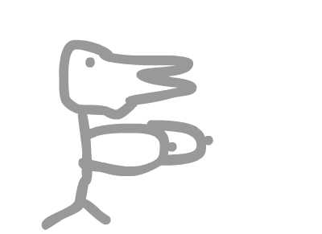
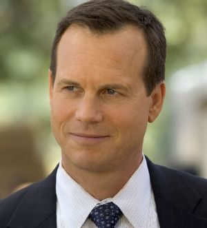

THE FINAL DAYS OF HEATH LEDGER
Starring
 Mary Kate Olsen (MKO)
Mary Kate Olsen (MKO)
Sexy Turkey Girlfriend (STG)
Bill Paxton (BP)
and Heath Ledger (HL) as himself
(Cut to Sexy Turkey Girlfriend and Mary Kate Olsen entering a swanky
NYC apartment)
STG- Hey baby, I'm home, and you'll never guess who I ran into on the street!
HL- (asleep on bed) What? Oh, who?
STG- OMG, here she is (points to Mary Kate).
MKO- Hey Heath.
HL- Oh, hi Ashl...
MKO- No...Its me, Mary Kate (looks dissapointed).
HL- Sorry, I don't have my contacts in.
STG- Well anyway, Mary Kate, OMG we have so much to catch up on, lets
go make some sammies in the kitch (Sexy Turkey Girlfriend walks
towards kitchen).
MKO- Oh Heath one, more thing before I go.
HL- Yeah, whats that?
MKO- (with a whisper) Kill yourself...
(End scene, day 1. The next day, we see Heath walking down the street
with his old buddy, Bill Paxton)
BP- And so thats the day I realized, I just can't act.
HL- Yeah well, it happens. Hey that reminds me, yesterday the
weirdest thing happened. Mary Kate Olsen stopped by our apartment in
the afternoon with Sexy Turkey Girlfriend and...
BP- Wait, that super hot biatch from Full House?
HL- No no, thats Ashley, Mary Kate is that ugly skank with the bad breath.
BP- Right, right.
HL- Well anyway, as she's leaving my room to go get something to eat,
I think I hear her say that I should kill myself!
BP- Kill yourself? That's the craziest thing I've ever heard!
HL- I know right, that bitch telling ME, I should kill myself.
BP- Crazy man, anyway you know I've had that sleeping problem lately?
I just got these awesome new pills from the doctor, they just knock me
out at night.
HL- Oh really, I've been having some trouble myself, can I try a few?
BP- Oh yeah, just take the bottle, I have more at home.
HL- Really? Thanks mate.
BP- No prob, but I gotta run, catch you lata playa!
HL- Thanks again man.
BP- Oh and one more thing, (with a whisper) Take the whole bottle so
you can kill yourself...
(End scene, day 2. The next night we find Heath at home with his Sexy
Turkey Girlfriend.)
HL- God, I have had just the weirdest last couple days. I mean, can
you even believe these people? Supposed to be my friends.
STG- OMG Heath, you are just so hot, and like those other guys are
just like so jealous of us and our awesome relationship.
HL- Yeah, you're probably right.
STG- I mean like this one time, my friend Tiff was like OMG your bf is
like so hot in that movie with the cowboys. And I was like, OMG, you
are sooo right.
HL- I know babe, thanks for your support, I'm just a little down in
the dumps tonight.
STG- OMG, you know what will just totally cheer you up?
HL- No, what?
STG- One of my world famous cocktails!!!!!
HL- Oh, ok I guess.
(Sexy Turkey Girlfriend comes back with a big drink in her talons)
HL- Thanks babe.
STG- It's a special recipe, just for you...
(With his first sip Heath starts to look a little confused and feels
woozy. He falls to the floor with a loud THUMP. Just before he shuts
his eyes for the last time, he looks up and sees someone standing
before him. It is not his Sexy Turkey Girlfriend, not Mary Kate
Olsen, or even his old friend Bill Paxton. Ashley Olsen looks down at
him with death in her eyes.)
AO- You shouldn't have crossed the Olsen twins Heath Ledger. And now
you pay the price.
(End scene. Curtain.)